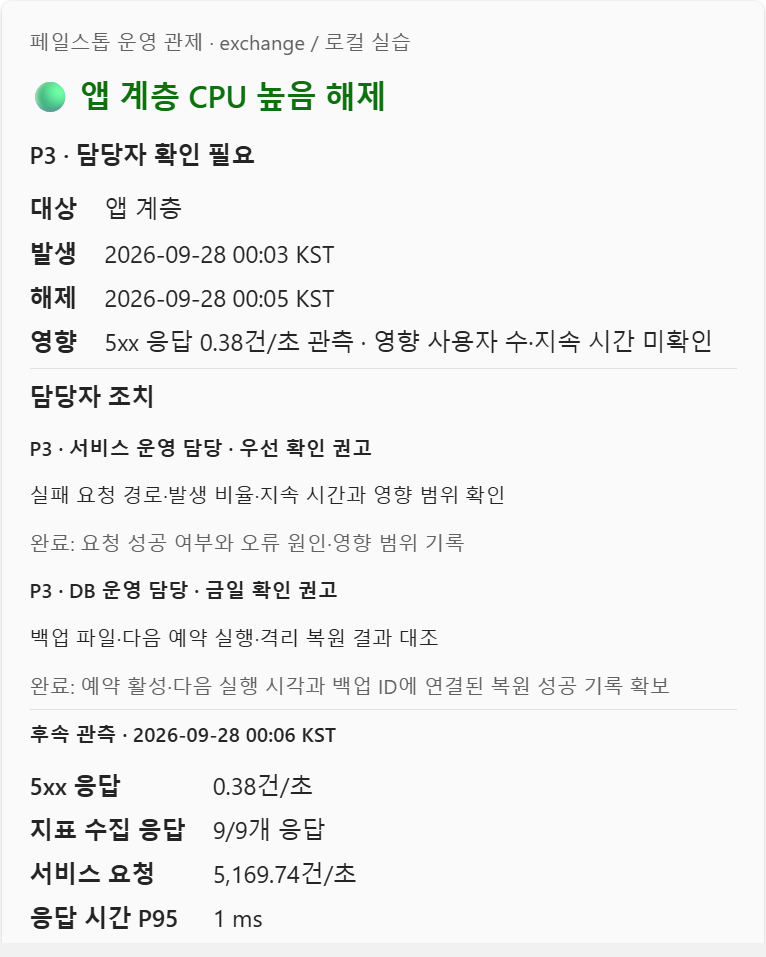
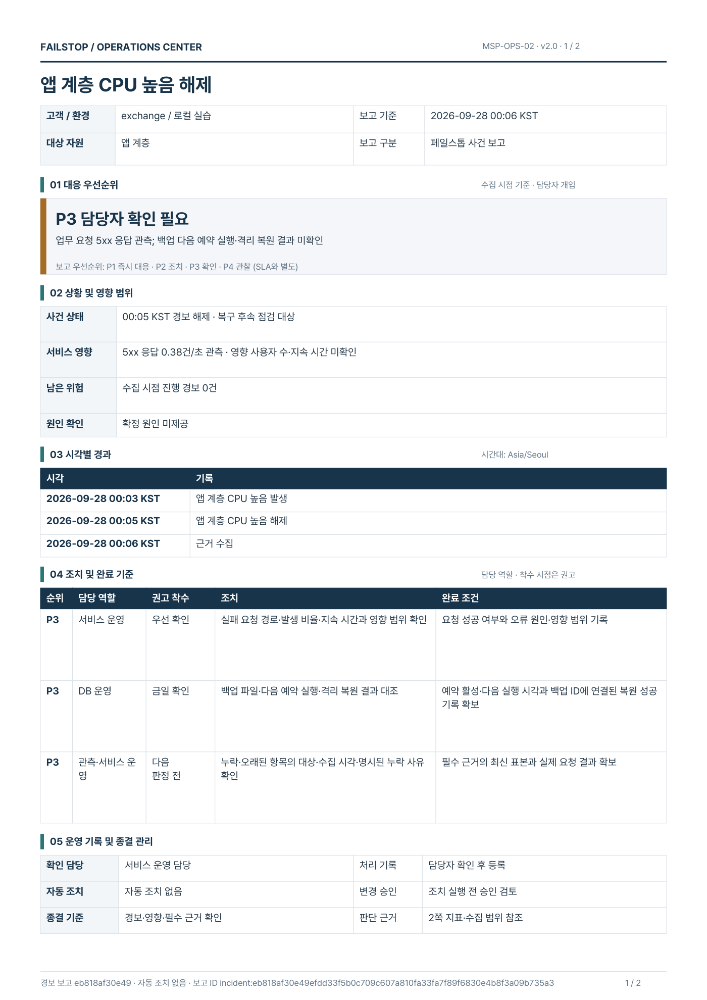
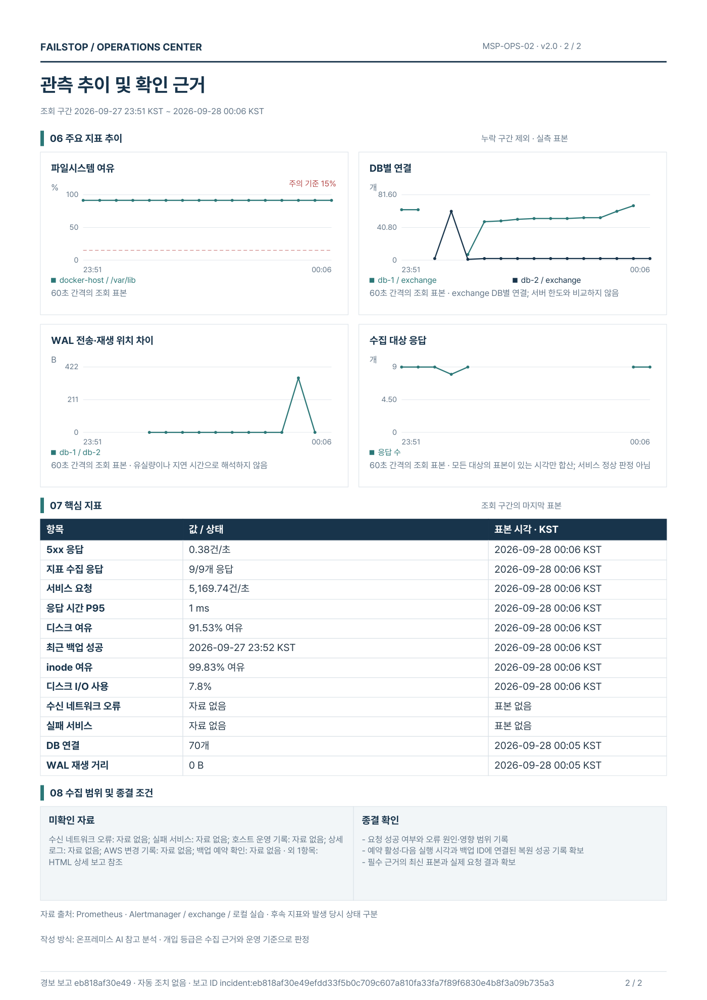

페일스톱모의 거래소 운영 인프라
보고 전달
경보는 Teams 카드와 2쪽 보고서로
 개발 PC · 로컬 실습
개발 PC · 로컬 실습
경보가 울리고 풀릴 때마다, 확인할 일과 완료 조건까지 근거와 함께 보냄
Teams 채널 카드

경보
앱 계층 CPU 높음
00:03 발생 · 00:05 해제
보고 서비스
00:06 근거 수집
15분 지표와 경보 기록
온프레미스 AI
수집한 근거로 참고 분석
PDF 보고서1 / 2


원칙개입 등급은 수집 근거와 운영 기준으로 판정, AI 분석은 참고용 · 보고 서비스는 조치를 실행하지 않음